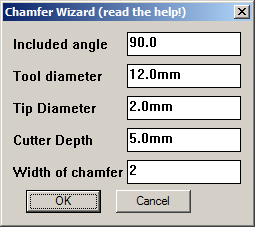
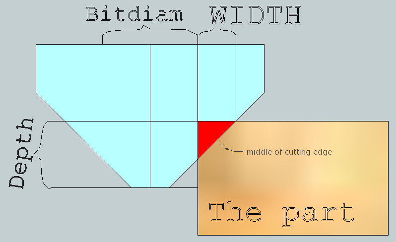
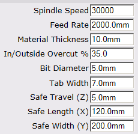
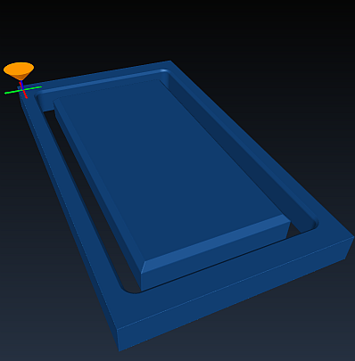

May 2016
HOWTO use the Chamfer Wizard
In order to achieve a particular width of chamfer you need to set the correct tool depth and width such that a cutline at the correct distance from the object is created.
While it is possible to guess or calculate these values manually, it is much easier to use the chamfer wizard!
This wizard calculates a 'virtual diameter' and cut depth (as a percetnage of current material thickness) and sets these parameters for you. After this, all you need to do is apply the cut lines to your drawing and generate G-code.
NOTE: you will want to save your current tool as a tool profile so that it is easy to restore after the wizard changes the setttings for the chamfer. You may also wat to save the chamfer settings as a tool profile so that it is easy to re-use the already calculated setttings.
How to use the tool:- Here are my tool settings for my normal cuts, 10mm material and a 6mm bit

- Access the wizard via Tools|Phlatboyz|Set Chamfer parameters menu
- 
The default parameters for the tool are for a chamfer tool this writer owns.
Here I have set my desired chamfer width to 2mm. - When you click the OK button the program will calculate the following values:
 A Bitdiam
A Depth
Such that the center of the cutting edge is centered on the desired chamfer (the red bit) and will give the chamfer 'Width' as entered above.
In the illustration the pale blue is the cutter, the brown is the part material, and the red is the chamfer material that will be removed.
- After clicking OK on the Chamfer Wizard, the settings in the parameters dialog are changed to those shown below:

As you can see, the Overcut% has been set to 35% and the Bit Diameter has been set to 5mm.
The combination of these settings will result in a 2mm wide chamfer on the part. - Now set Outside and Inside cutlines on a copy of your part.
- Generate G-code for this copy of the part.
- set the cutline AFTER using this tool, and delete and redo it if you change parameters. Generate Gcode directly after creating cut line.
- The chamfer cutter may plow a groove that is wider than the tool used for the outlines, thus cutting into the waste material outside of the part. You may want to use multipass cuts with ramping since the V shaped bit can use up a lot of power unexpectedly. You also need to leave room around the part for this overlapping chamfer cut.
- You cannot cut a chamfer that is wider than the chamfer bit. In the above case chamfers are limited to 5mm as that is the height (and width) of the chamfered portion of the bit.
Example simulated cuts using the above data:
 This is the part after the cut by the straight 6mm bit.
This is the part after the cut by the straight 6mm bit.
 This shows the result after the chamfer cut with a 90 degree chamfer bit. Chamfer is 2mm wide.
Here is a detail view of the chamfer cut in progress. You can see that the chamfer bit is cutting on both sides if the initial slot cut. As the chamfer gets wider this effect gets worse and the chamfer can end up taking quite a large cut.